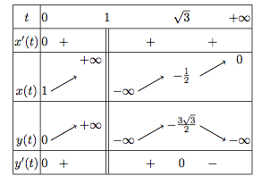
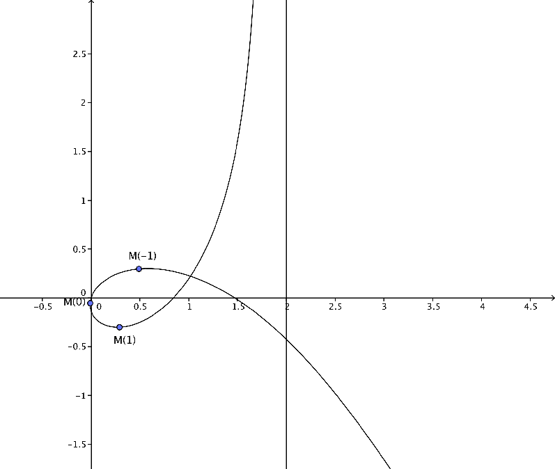

Exercices corrigés - Courbes paramétrées
Théorie générale
Exercice 1 - Du tableau de variations à la courbe ♡ [Signaler une erreur] [Ajouter à ma feuille d'exos]
Enoncé 
Soit $f:[0,+\infty[\to\mathbb R^2$ un arc paramétré de classe $C^1$, dont le tableau de variations des fonctions coordonnées
est :

Que peut-on dire, à la lecture de ce tableau, des points stationnaires? des tangentes parallèles aux axes? des branches infinies?
Tracer une courbe paramétrée qui peut correspondre à ce tableau de variations.
Exercice 2 - De la courbe au tableau de variations ♡ [Signaler une erreur] [Ajouter à ma feuille d'exos]
Enoncé
Donner le tableau de variations de l'arc paramétré représenté ci-dessous et défini sur $\mathbb R$.

Enoncé
Étudier les branches infinies de la courbe paramétrée $t\mapsto \left(\frac{t^3}{t^2-9},\frac{t(t-2)}{t-3}\right).$
Enoncé
Démontrer que la courbe paramétrée $t\mapsto \left(\displaystyle 2t-\frac 1{t^2},2t+t^2\right)$ possède un point double dont on donnera les coordonnées.
Enoncé
Déterminer une équation cartésienne de l'arc paramétré $t\mapsto \left(\frac t{1-t^4},\frac{t^3}{1-t^4}\right)$.
Exercice 6 - Point le plus proche de l'origine ♡ [Signaler une erreur] [Ajouter à ma feuille d'exos]
Enoncé
Soit $\overrightarrow{OM(t)}=f(t)$ une courbe paramétrée de classe $C^1$, où $t$ parcourt l'intervalle ouvert $I$, dont tous les points sont réguliers, et ne passant pas par l'origine.
Soit $t_0\in I$ tel que la longueur $OM(t_0)$ soit minimale. Prouver que $\overrightarrow{OM(t_0)}$ est orthogonal à la tangente à la courbe en $M(t_0)$.
Etude locale
Exercice 7 - Tangente en un point stationnaire ♡ [Signaler une erreur] [Ajouter à ma feuille d'exos]
Enoncé
Pour $t\in \mathbb R\backslash\{-1,1\}$, on note $f(t)=\frac{t^2}{1-t^2}$ et $g(t)=\frac{t^3}{1-t^2}$. Dans un plan muni d'un repère $(O,\vec i,\vec j)$, on note $M(t)$ le point de coordonnées $(f(t),g(t))$ et $\mathcal C$ la courbe paramétrée $\{M(t);\ t\in \mathbb R\backslash\{-1,1\}\}$.
- Rappeler sans justification le développement limité en 0 à l'ordre $1$ de $\frac{1}{1-u}$.
- Déterminer les développements limités des fonctions $f$ et $g$ à l'ordre $3$ en $0$.
- En déduire la valeur de $f''(0)$ et celle de $g''(0)$.
- Donner les coordonnées d'un vecteur tangent à $\mathcal C$ en $(0,0)=(f(0),g(0))$.
Enoncé
Déterminer les points d'inflexion de l'arc paramétré $t\mapsto \big( (t-2)^3,t^2-4\big)$.
Enoncé
Déterminer la nature au point $t=0$ des arcs paramétrés suivants :
$$
\begin{array}{lll}
\mathbf{1.}\ t\mapsto (t+2t^2-t^3,t+2t^2-t^7)&\quad\quad&\mathbf{2.}\ t\mapsto (-t+t^2,t^2+t^3)\\
\mathbf{3.}\ t\mapsto (-t^2-2t^3,-t^3-t^5)&\quad\quad&\mathbf{4.}\ t\mapsto (t^2+3t^3+t^4,-2t^2-6t^3+t^4).
\end{array}
$$
Tracé de courbes
Enoncé
Tracer la courbe paramétrée d'équation $t\mapsto (\cos^3 t,\sin^3 t)$.
Enoncé
On considère la courbe paramétrée
$$t\mapsto \left(\frac{t}{1+t^4},\frac{t^3}{1+t^4}\right).$$
- Que déduit-on du changement de variables $t\mapsto 1/t$? Sur quel intervalle peut-on réduire l'étude?
- Construire la courbe.

Exercice 12 - Exponentielle et fonctions trigonométriques ♡ [Signaler une erreur] [Ajouter à ma feuille d'exos]
Enoncé
Tracer la courbe paramétrée d'équation $t\mapsto (\exp(\sin(2t)),\exp(\cos(t))$.
On précisera en particulier le point double.
Enoncé
Étudier et tracer la courbe paramétrée $t\mapsto (2\cos t-\cos 2t,2\sin t-\sin 2t)$.
Enoncé
Étudier et tracer la courbe de Lissajous $t\mapsto (\sin(2t),\cos(3t))$.
Enoncé
On considère la courbe paramétrée
$$t\mapsto \left(\frac{t}{1+t^3},\frac{t^2}{1+t^3}\right).$$
- Que déduit-on du changement de variables $t\mapsto 1/t$? Sur quel intervalle peut-on réduire l'étude?
- Construire la courbe. On étudiera ses branches infinies, et on précisera la position de la courbe par rapport à sa ou ses asymptotes.
Enoncé
Soit $R>0$.
- Étudier et tracer la courbe paramétrée $t\mapsto (R(t-\sin t),R(1-\cos t))$.
- Une roue de rayon $R$ roule sans glisser à vitesse constante $R$ sur l'axe $(Ox)$. Montrer que le point de la roue qui au temps $t=0$ coïncide avec $O$ décrit une cycloïde.
Exercice 17 - Branches infinies et point singulier ♡ [Signaler une erreur] [Ajouter à ma feuille d'exos]
Enoncé
Étudier la courbe paramétrée suivante : $t\mapsto \left(t+\frac 1t,t+\frac 1{2t^2}\right)$, $t\in\mathbb R^*$.
On étudiera en particulier la position par rapport aux asymptotes, et la tangente aux points stationnaires.